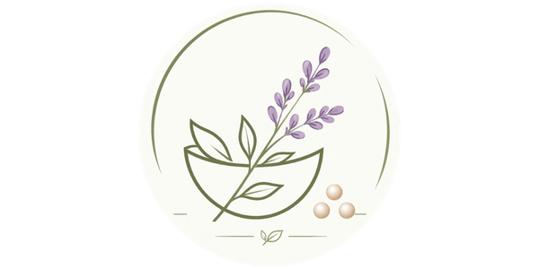

Monika Pernicová
HOMEOPATICKÉ PORADENSTVÍ
Moje cesta k homeopatii začala v roce 2004 s narozením druhého syna. Prvorozený syn se tehdy potýkal se stále se zhoršujícím zdravotním stavem při klasické alopatické péči. Z důvodu nespokojenosti jsem se rozhodla pro změnu dětské lékařky, která nám nabídla podporu pomocí homeopatie. Nejdříve jsem s mírnou opatrností obě cesty kombinovala, ale brzy jsem se přesvědčila, že se na homeopatii mohu plně spolehnout.
Můj druhý syn, vedený od narození homeopaticky, se od dětství těší výbornému zdraví – a stejně je tomu i u mého nejmladšího, třetího syna. U nejstaršího syna se nám díky této péči postupně podařilo zcela zbavit potravinových alergií i dalších vleklých potíží.
Po přibližně dvacetileté praxi v domácí péči, kdy jsem nasbírala nespočet zkušeností na rodině i našich domácích mazlíčcích, přišla touha jít hlouběji. Nastoupila jsem na studium akutní homeopatie a následně na Homeopatickou fakultu v Brně. Fascinace homeopatií, její hluboké propojení s přírodou a skvělé vedení učitele Aleše Sušického mi dávají velkou motivaci pomáhat druhým na jejich cestě k rovnováze a zdraví. Právě v tom jsem našla smysl svého života.
Homeopatie je jemná cesta ke zdraví a celkové rovnováze pro každého z nás.
O homeopatii
Homeopatie je ucelená metoda péče o zdraví objevená na konci 18. století. Využívá přírodní látky bez nežádoucích vedlejších účinků k povzbuzení přirozených samozdravicích procesů těla. Vychází z principu „podobné se léčí podobným“ – látka, která u zdravého člověka vyvolá určité příznaky, dokáže v homeopatickém podávání stejné příznaky u oslabeného organismu harmonizovat.
Dnes homeopatie pracuje s více než dvěma tisíci přírodními preparáty. Pomáhá navracet rovnováhu jak při běžných akutních potížích (jako je nachlazení či kašel), tak při dlouhodobých a chronických stavech. Podle Světové zdravotnické organizace (WHO) využívá homeopatii přes půl miliardy lidí a jde o druhou nejrozšířenější formu tradiční a holistické péče na světě. V mnoha evropských zemích (např. v Anglii, Francii či Nizozemsku) je přirozenou součástí zdravotních systémů.
Tkáňové (Schüsslerovy) soli
Tkáňové soli jsou základní minerální živiny nezbytné pro správné fungování buněk. Jejich nedostatek či nerovnováha se často projevuje únavou nebo zdravotními disbalancemi. Díky jemné homeopatické potenci (D3 a D12) tělo dokáže tyto minerály přijmout přímo na buněčné úrovni bez rizika předávkování.
Všechny tkáňové soli jsou zcela bezpečné i pro malé děti, těhotné a kojící maminky.
Veterinární homeopatie
Jemná a účinná podpora zdraví a životní energie pro vaše domácí mazlíčky při nejrůzdnějších fyzických i psychických potížích.
Mykoterapie – síla vitálních hub (Pravidelná nabídka od roku 2027)
Aktuálně rozšiřuji své vzdělání v odborné MycoAkademii. Využití vitálních hub jako holistického doplňku pro podporu imunity a vitality budu do svých konzultací zařazovat v průběhu roku 2027.
Ceník
Vstupní konzultace
Doba trvání: 1,5 – 2 hodDetailní rozhovor zaměřený na řešení opakovaných nebo chronických potíží. Během konzultace rozebereme celkový fyzický i psychický stav, na jehož základě vyberu konkrétní homeopatický přípravek na míru vašim aktuálním potřebám. Homeopatikum dostane klient v rámci vstupní konzultace.
Kontrolní konzultace
Doba trvání: 30 – 45 minHodnocení vývoje stavu, působení vybraného přípravku a případná úprava dávkování. Zpravidla probíhá s odstupem 4 až 6 týdnů od vstupní konzultace. V rámci kontrol si klient hradí doporučená homeopatika samostatně.
Akutní konzultace
Doba trvání: cca 15 minRychlé poradenství při náhlých stavech, jako jsou úrazy, začínající virózy, zažívací potíže či náhlé stavy úzkosti. Nejčastěji probíhá telefonicky
Paušální konzultace
Osobní homeopatické poradenství na telefonu pro řešení akutních stavů celé rodiny (až pro 5 členů, ideální pro rodiny s malými dětmi). Získáváte stálou podporu od prvních příznaků přes průběh nemoci až po rekonvalescenci a prevenci.
Kontakt

Monika Pernicová | Poradna Boskovice
IČO: 75874407
Telefon: +420 775 912 288
E-mail: monpernicova2@seznam.cz